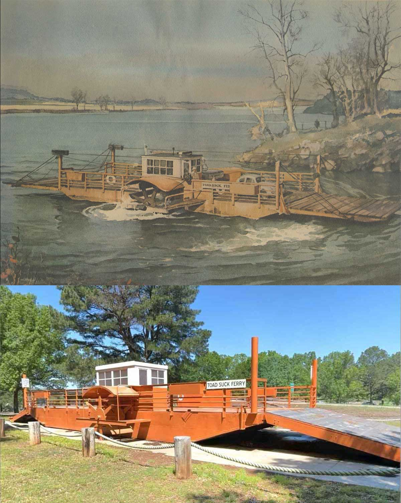

Home
Welcome to the Toad Suck Ferry 3D model page, where you can obtain the design files to create your own replica with a 3D printer.
The files are available for download in STL format from Printables.com.
https://www.printables.com/model/1417860-the-toad-suck-ferry-3d-model
The same parts are also provided in four STEP format files which provide better quality and higher resolution. The individual parts should be extracted from those files and saved as separate items in STEP for for 3D printing. In Orca Slicer, the 'Cut' tool is useful for separating multiple parts within a STEP file.
Also, the original CAD files are available from the OnShape app at this link -
https://cad.onshape.com/documents/b25c89814b3cbf1fab82071a/w/0ba1ec7e895924878b72a461/e/5c6418346523626489ef4066.
The OnShape app is free for use with public models like this one, and it can export the model
to popular formats like STL and STEP for 3D printing. You can copy to model to your own
workspace and edit it as needed to produce the best results for your 3D printer.

A spool of orange PLA filament works well for printing most of this model. If you use PLA, avoid storing the ferry in direct sunlight. Don't keep the ferry in a hot car, the heat can deform the model. And avoid exposure to excessive moisture, since PLA is a biodegradable plastic. Other PLA colors used in this model include white, black, silver and clear transparent PLA.
The model data is assigned to the public domain, and may be freely used for any purpose.
For more information about the ferry, please visit the Toad Suck Ferry page at x.com (formerly Twitter) - https://x.com/ToadSuckFerry
This model is entered in the 2025 Faulkner County Fair in the arts and crafts show, in the "Toy" category, adults division.
UPDATE: The Toad Suck Ferry 3D Model was awarded a blue ribbon at the 2025 Faulkner County Fair!

About

(Credits: Painting by Will Satterfield. Photo by Doug Ward.)
This model was designed by Doug Ward with measurements obtained from the original ferry boat located at Toad Suck Ferry Lock and Dam Park in Conway, Arkansas.
Special thanks to Jack Bell, the Arkansas Department of Transportation and the City of Conway for arranging the return of the ferry to the park.
Many thanks to the Faulkner County Historical Society, the Faulkner County Museum, and UCA Makerspace for technical assistance and historical data.
Contact
Please visit the Toad Suck Ferry page at x.com (formerly Twitter) - https://x.com/ToadSuckFerry